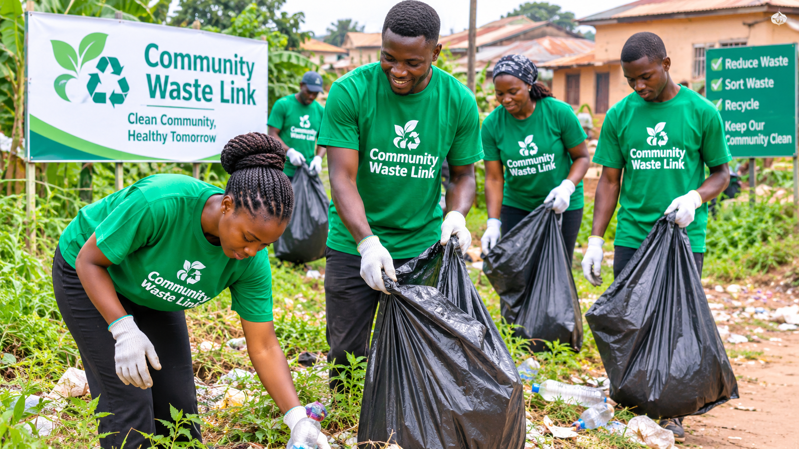
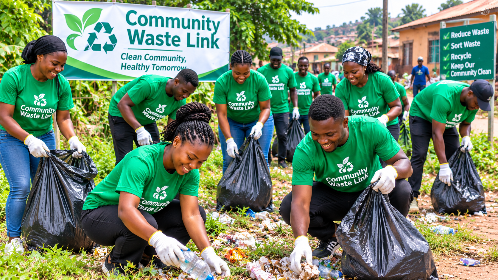

About Community Waste Link
Building cleaner, healthier and more sustainable communities through effective waste management.
Community Waste Link is a proposed digital platform designed to improve waste management in informal settlements within different communities such as Kireka division, Kampala. We connect residents, local leaders, and authorised waste collectors through accessible and user-friendly digital tools. Our platform aims to enhance waste collection, recycling, and disposal processes, ultimately contributing to cleaner and healthier communities.


Who We Are
We are a community-focused initiative and committed to creating sustainable solutions to waste management challenges in informal settlements.
Our aim is to make waste collection information easily accessible while encouraging residents to take responsibility for their waste and keeping their surroundings clean.
Our Mission
Our mission is to promote responsible waste management by providing reliable information, encouraging proper waste disposal and strengthening communication between residents, local leaders and waste collectors.
Our Vision
Our vision is to see cleaner, healthier and more sustainable communities where everyone takes part in protecting the environment through proper waste management.
Our Objectives
Our objectives include:
- Improving waste collection efficiency within communities.
- Encouraging recycling and proper waste disposal.
- Increase community engagement in waste management.
- Provide accessible waste collection information and resources.
- Strengthen partnerships with local authorities and waste management organisations.
- Support sustainable waste management practices and policies.
- Promote environmental education and awareness.
How Community Waste Link Works
Community Waste Link connects residents, local leaders, and authorised waste collectors through a user-friendly digital platform. The system facilitates efficient waste collection, promotes recycling, and disposal processes while promoting community involvement and environmental responsibility.
- Residents can check waste collection schedules, recycling guidelines, and proper disposal methods.
- Local leaders can share important announcements, updates and coordinate community waste management activities.
- Authorised waste collectors can receive collection requests, organise collection routes and report any issues encountered during waste collection.
- The platform also provides educational resources and tips for residents to encourage responsible waste management practices.
- Community members can submit feedback and report waste-related problems within their communities.